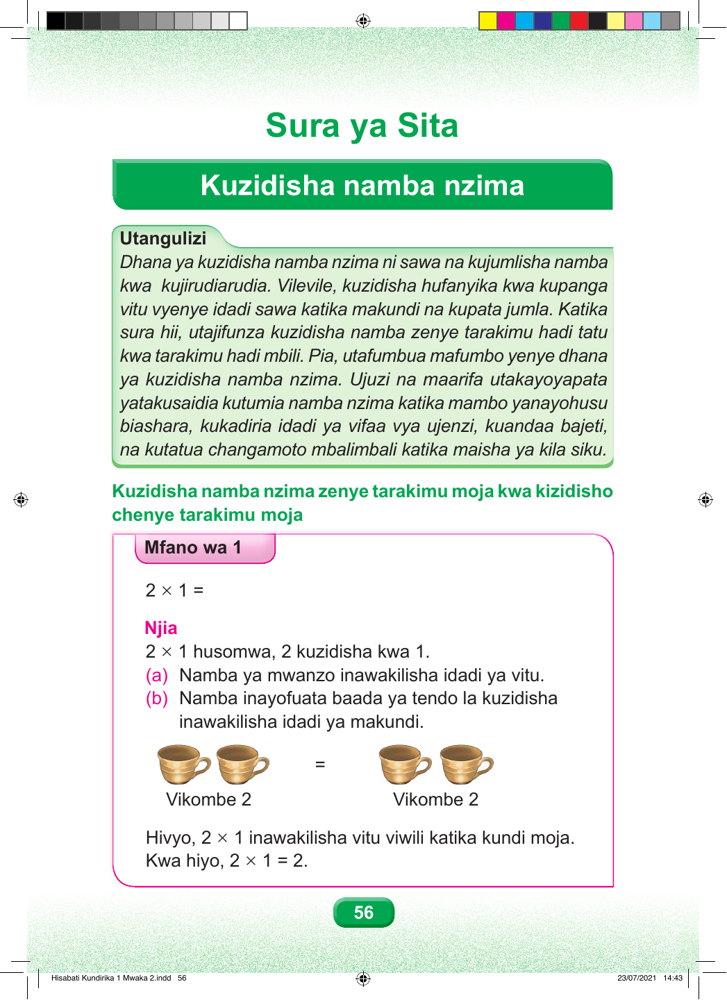

Sura ya Sita Kuzidisha namba nzima Utangulizi Dhana ya kuzidisha namba nzima ni sawa na kujumlisha namba kwa kujirudiarudia. Vilevile, kuzidisha hufanyika kwa kupanga vitu vyenye idadi sawa katika makundi na kupata jumla. Katika sura hii, utajifunza kuzidisha namba zenye tarakimu hadi tatu kwa tarakimu hadi mbili. Pia, utafumbua mafumbo yenye dhana ya kuzidisha namba nzima. Ujuzi na maarifa utakayoyapata yatakusaidia kutumia namba nzima katika mambo yanayohusu biashara, kukadiria idadi ya vifaa vya ujenzi, kuandaa bajeti, na kutatua changamoto mbalimbali katika maisha ya kila siku. Kuzidisha namba nzima zenye tarakimu moja kwa kizidisho chenye tarakimu moja Mfano wa 1 2 × 1 = Njia 2 × 1 husomwa, 2 kuzidisha kwa 1. (a) Namba ya mwanzo inawakilisha idadi ya vitu. (b) Namba inayofuata baada ya tendo la kuzidisha inawakilisha idadi ya makundi. = Vikombe 2 Vikombe 2 Hivyo, 2 × 1 inawakilisha vitu viwili katika kundi moja. Kwa hiyo, 2 × 1 = 2. 56 Hisabati Kundirika 1 Mwaka 2.indd 56 23/07/2021 14:43